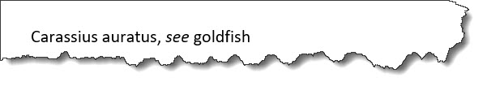

<index-see>
An <index-see> element directs the reader to an index entry that
the reader should use instead of the current one.
Usage information
There can be multiple <index-see> elements within an
<indexterm> element.
Processing expectations
Processors SHOULD ignore an
<index-see> element if its parent
<indexterm> element contains any <indexterm>
children.
Content model
(Text | <data> | <foreign> | <keyword> | <term> | <text> | <ph> | <indexterm>)*
Contained by
Contained by
Inheritance
- topic/index-see
The <index-see> element is a base element type. It is defined in the topic module.
Attributes
The following attributes are available on this element: universal
attributes and @keyref.
The following attributes are available on this element: universal attributes and the attributes defined below.
@keyref- Specifies a key name that acts as a redirectable reference based on a key definition within a map. See The keyref attribute for information on using this attribute.
Examples
This section is non-normative.
This section contains examples of how <index-see> elements can be
used.
<index-see> elementThe following code sample shows how an <index-see> element is used
to refer readers to the preferred term:
<indexterm>Carassius auratus
<index-see>goldfish</index-see>
</indexterm>This markup will generate an index entry without a page reference. It might look like the following:

<index-see> element to redirect to a multi-level
index entryThe following code sample shows how an <index-see> is used to
redirect to a multilevel index entry:
<indexterm>feeding goldfish
<index-see>goldfish
<indexterm>feeding</indexterm>
</index-see>
</indexterm>